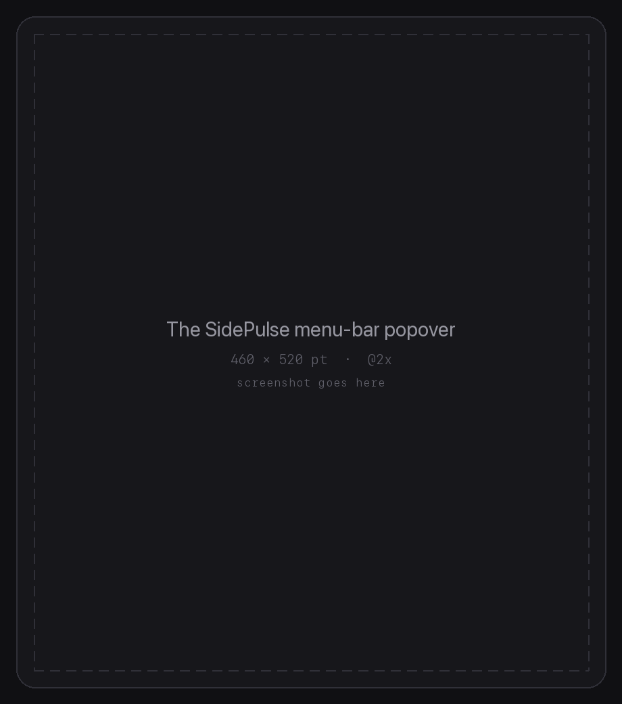
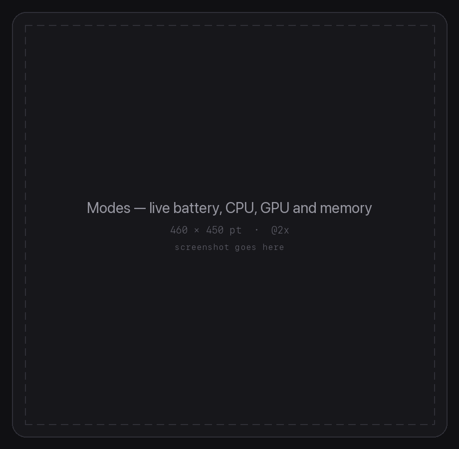
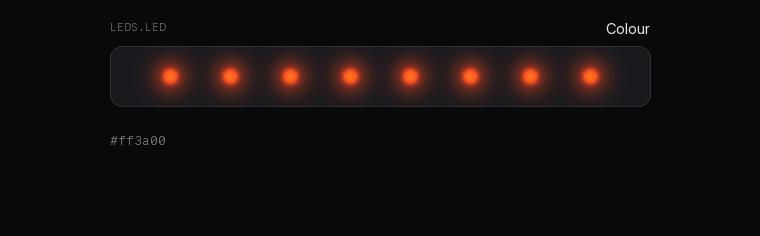
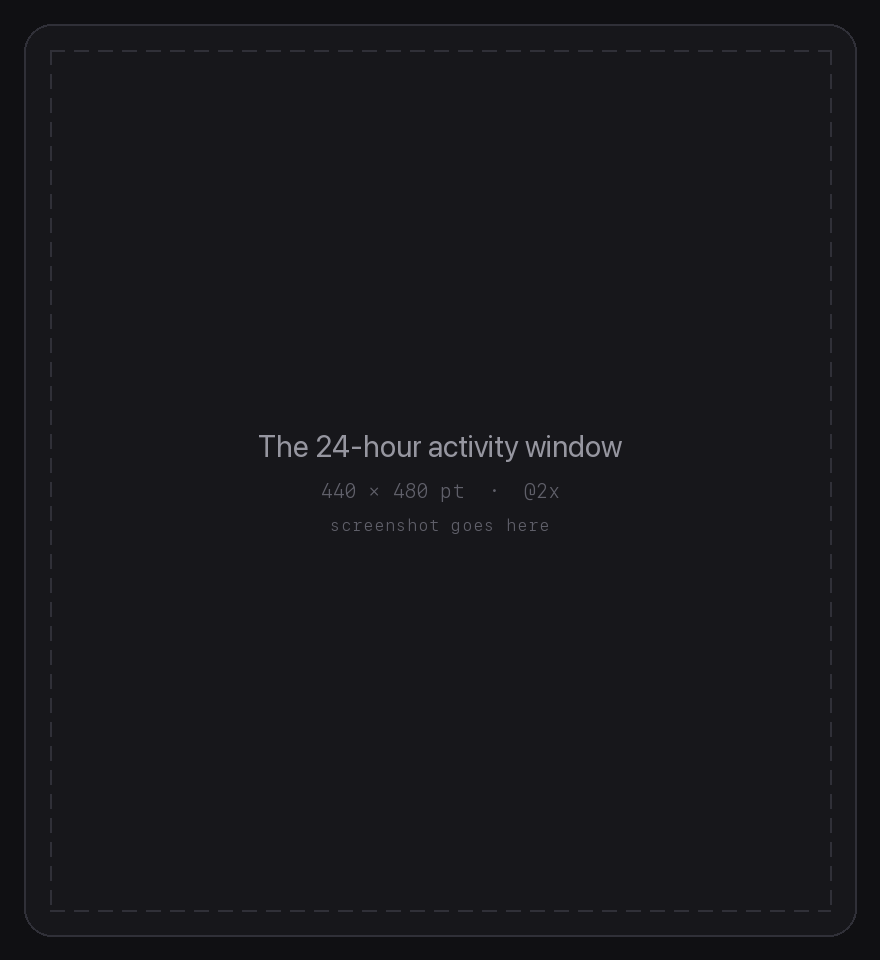

Open-source menu-bar app for macOS
Eight LEDs that actually stay on.
SidePulse Pro sits flush in your MacBook Pro's SD slot. This app keeps it awake, puts your battery, CPU, GPU and memory on it, and hands you the whole LED format when you want to write your own.
A drawing, not a photo — running the Rainbow preset's real program.
brew tap gourneau/sidepulse && brew install --cask sidepulse
Requires macOS 13 or later, and SidePulse hardware. Signed and notarised.
The whole reason it exists
The SD reader powers the card down. This doesn't let it.
Leave a SidePulse Pro in a MacBook Pro and the slot cuts power after about three minutes of quiet. The app touches a single zero-byte file every sixty seconds, which is enough to keep the reader interested and never disturbs the animation.
And when the device does restart — you closed the lid, or unplugged something — it notices the uptime counter go backwards and puts your program back without being asked.

The format
It's a file. Write to it.
The device mounts as a small disk. Everything the LEDs do comes from a
tiny program you write to LEDS.LED — no drivers, no SDK, no daemon of its
own. The app's own presets are just programs, and it will show you the one currently
running.
# a rolling rainbow, 90 bytes #ff0000 #ffbf00 #80ff00 #00ff40 #00ffff #0040ff #8000ff #ff00bf roll 1980ms linear repeat # a comet with a fading tail off 0:#26e5ff 1:#137280 2:#0a3940 roll 1750ms linear repeat
Edit it live
The DSL tab shows the real file on the device, validates against the controller's limits as you type — 512 bytes, 20 lines — and can save what you have as the program that replays every time the device powers up.
Auto-reload
Turn it on and the editor re-reads the file, so changes made by anything else on your Mac show up as they happen. Your unsaved edits are never overwritten.

Modes
Your machine, along the edge of your machine.
Turn on a metric and the whole strip becomes a bar for it. Turn on several and it cycles between them at whatever pace you like.
Battery
Fills white, and breathes while charging.
CPU
Blue, sampled on a steady cadence.
GPU
Purple, read from the accelerator itself.
Memory
Green, the fraction actually in use.
Presets
Or just pick one.
Rainbow, Chase, Breathe, Sparkle, White, Off — each with an animated toggle and a speed slider. Below is what changing between them looks like, with the program that produced each frame.

Sharing the device
It knows when it isn't the only one writing.
Because the device is just a filesystem, an AI agent, an MCP server or a shell script can drive it too — and then you have two things fighting over the same file. The app says so plainly instead of letting your LEDs flicker unexplained.
Writing Contested Observing
Observer mode stops every write the app makes, so another tool can own the device outright. The keepalive keeps running — it touches a different file that nothing else wants, and without it the card would power down on everyone.

Also in there
Keep the Mac awake
Optionally even with the lid closed, through a privileged helper you approve once.
Repair without rebooting
macOS's FAT driver can wedge on an emulated device. One click kills it and remounts.
Power-on default
Save any program to INIT.LED
and the strip comes back to it by itself.
Activity log
Twenty-four hours of keepalives, writes, warnings and repairs.
Per-LED colours
Set all eight individually, live, with no Apply button.
No Dock icon
It's a menu-bar agent. Launch at login and forget about it.
Install
Two ways in.
Homebrew
brew tap gourneau/sidepulse brew install --cask sidepulse
Or download it
Grab the notarised build from the latest release, unzip, and drag it to Applications. No Gatekeeper warning.
Or build it
git clone https://github.com/gourneau/sidepulse cd sidepulse && swift run